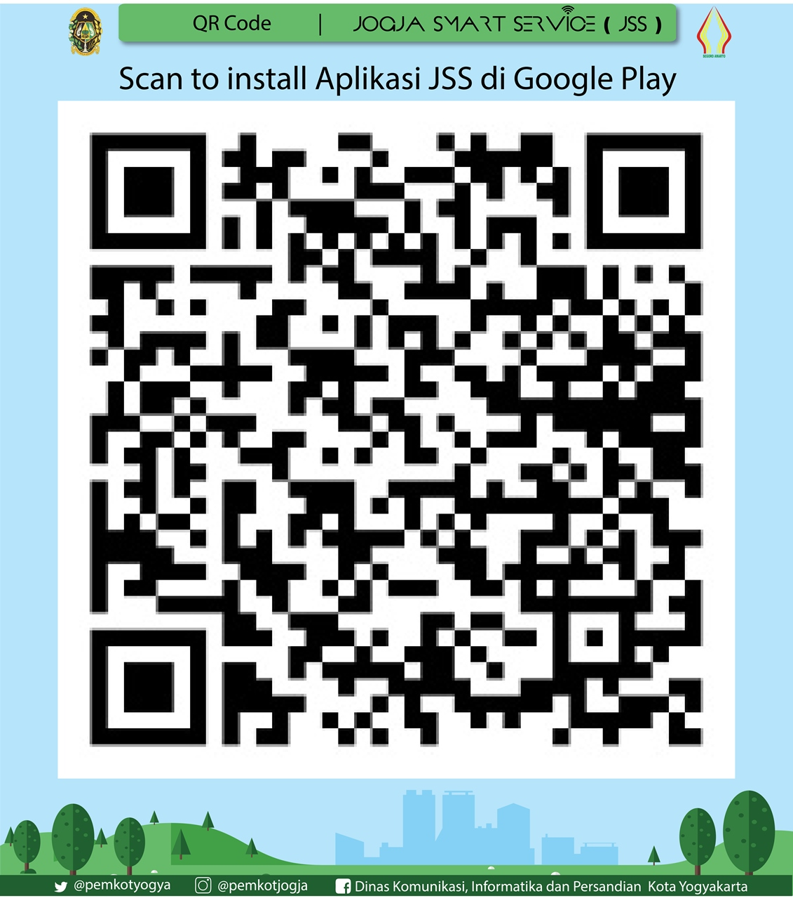
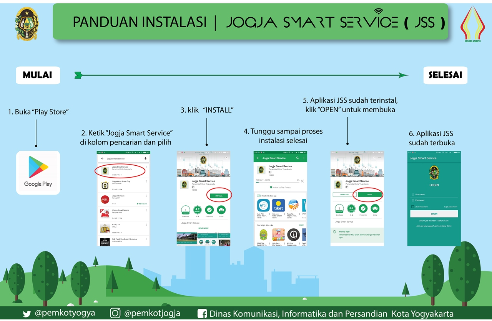
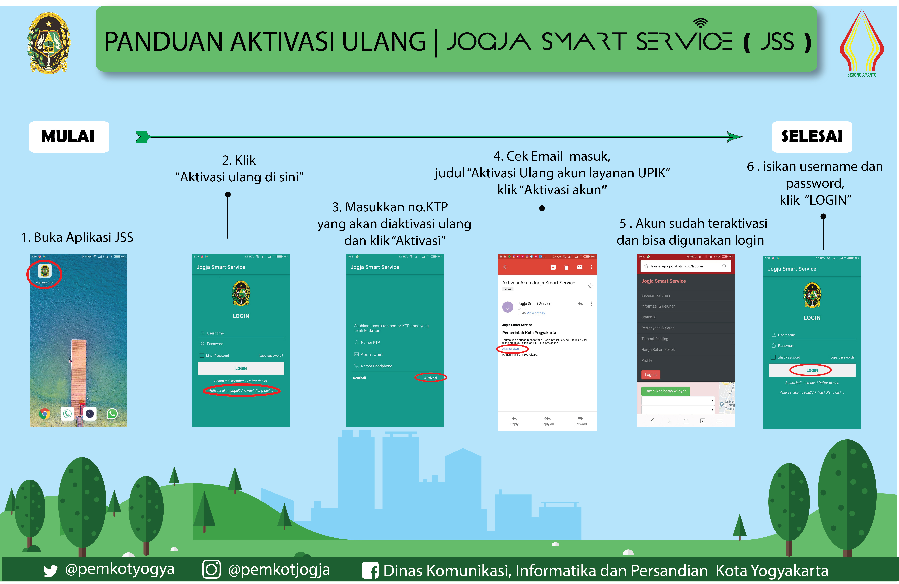
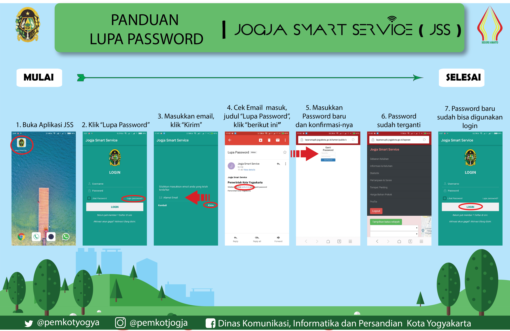

1. Unduh aplikasi dengan menekan gambar atau melakukan scan kode QR berikut: 
2. Setelah masuk ke aplikasi Google Playstore, pengguna bisa mengikuti langkah-langkah dalam infografis seperti berikut:

REGISTRASI
Proses registrasi melalui aplikasi mobile JSS dapat dilakukan dengan mengikuti panduan berikut:
AKTIVASI ULANG
Akun yang sudah didaftakan harus diaktifkan terlebih dahulu agar warga dapat menggunakan fitur penuh dari layanan JSS. Petunjuk aktivasi ulang akun dapat dilihat dalam infografis berikut:

LUPA KATA SANDI
Apabila pengguna tidak bisa masuk ke akun disebabkan lupa kata sandi, dapat diikuti petunjuk sebagai berikut:

Petunjuk singkat mengenai fitur layanan JSS, khususnya melalu aplikasi mobile. Panduan mengenai layanan kedaruratan dan pengaduan dapat diunduh dalam tautan berikut: